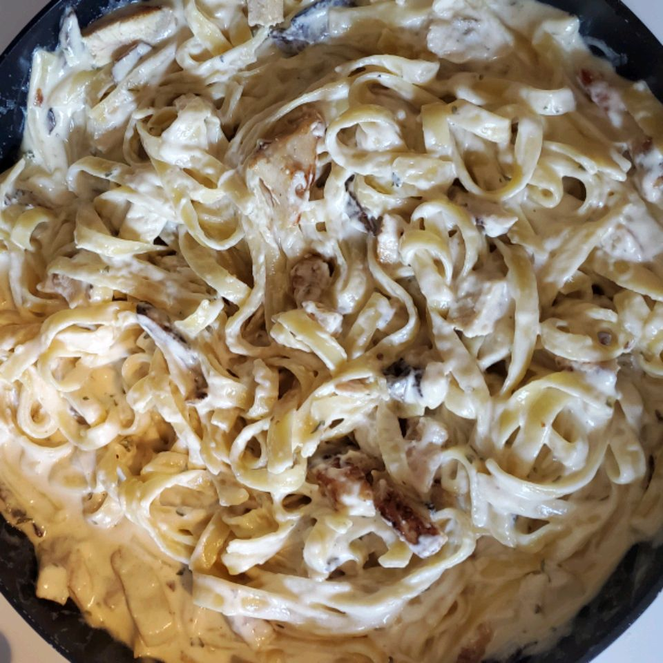

Chicken Pasta Alfredo

Description
Chicken, mushrooms, and tortellini in
rich cream sauce. Delicious!
Serve sprinkled with parsley and
cheese.
Ingredients
- 1 package tortellini
- 1 tbsp vegetable oil
- 4 chicken breast halves
- 3 tbsp butter
- ½ pound sliced mushrooms
- 1 pinch garlic powder
- 2 cups whipping cream
- ⅓ cup Parmesan cheese
- 3 tbsp chpped pasley
- 1 tsp salt
Steps
- Bring a large pot of lightly salted
water to a boil. Add tortellini. Cook,
stirring occasionally, until tortellini
float to the top and the filling is hot,
about 5 minutes. Drain.
- Heat vegetable oil in a large skillet
over medium heat; cook and stir chicken
breast in hot oil until no longer pink in
the center, about 10 minutes. Remove from
heat.
- Melt butter in another skillet over
medium heat; cook and stir mushrooms
and garlic powder until mushrooms
begin to soften, about 3 minutes. Stir
heavy cream into mushrooms and bring to
a boil. Reduce heat to medium-low and
simmer until slightly thickened, about
3 minutes. Add Parmesan cheese, parsley,
and salt. Continue to cook until cheese
is melted, about 1 minute.
- Stir tortellini and chicken into
mushroom-cream sauce. Simmer until heated
through, about 2 minutes.